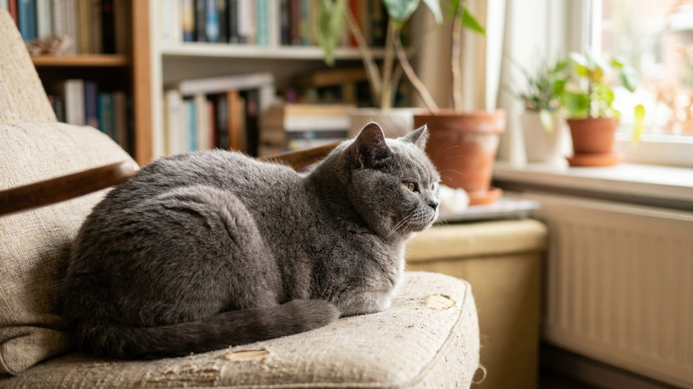

Британская короткошёрстная: 6 особенностей, которые меняют весь уход

13 июня 2026 · 8 минут чтения · Породы кошек
Британскую короткошёрстную покупают за внешность — круглая голова, плюшевая шерсть, невозмутимый взгляд. Но живут с характером. Порода самодостаточна, не любит, когда её берут на руки без разрешения, и при неправильном кормлении набирает лишний вес быстрее большинства пород. Шесть особенностей, которые отличают британца от «среднестатистической кошки» — и что с этим делать.
🐾 Спросите AI-ветеринара прямо сейчас
AnimaLife — приложение, где AI-ветеринар отвечает на вопросы о кошке или собаке 24/7. Бесплатно, без записи и очередей.
Открыть в Telegram → Открыть в MAX →
Особенность 1: британская кошка не ластится — она наблюдает
Британская короткошёрстная — не Сиамская и не Мейн-кун. Она не будет ходить за вами по пятам и требовать внимания. Её поведение правильнее описать как «компанейская дистанция»: кошка присутствует рядом, наблюдает, участвует — но на своих условиях.
- Британец редко сам запрыгивает на колени. Если запрыгивает — это знак особого расположения.
- Порода не переносит насильственных объятий. Ребёнка, который тискает кошку, нужно научить «британскому этикету»: дать кошке самой прийти.
- Хозяина британская короткошёрстная выбирает одного — и это выбор на всю жизнь.
- К гостям относится без агрессии, но и без восторга — просто уходит в другую комнату.
Это не холодность — это порода. Такое поведение нормально и не требует «исправления».
Особенность 2: склонность к лишнему весу — порода риска
Британская короткошёрстная входит в топ пород по риску ожирения. Причина — крепкое телосложение в сочетании с невысокой активностью и склонностью к неограниченному потреблению корма.
- Норма для взрослого британца: около 4–6 кг для кошек и 5–8 кг для котов. Всё выше — повод для разговора с ветеринаром.
- Свободный доступ к корму не подходит для этой породы. Кормление по норме и расписанию — 2 раза в день.
- Стерилизованные особи набирают вес ещё активнее: после стерилизации нужно переходить на корм с пониженной калорийностью.
- Регулярно щупайте рёбра: у кошки нормального веса рёбра ощущаются под лёгким слоем жира. Если не прощупываются — вес избыточен.
Особенность 3: шерсть британца — не длинная, но требовательная
Короткая шерсть британской породы обманчива. Густой, почти плюшевый подшёрсток линяет интенсивно — особенно весной и осенью.
- Расчёсывать британца нужно 1–2 раза в неделю вне линьки и ежедневно в период линьки.
- Используйте резиновую перчатку или щётку с натуральной щетиной — металлические расчёски разбивают плюшевую структуру.
- Купание: 1 раз в 2–3 месяца достаточно. Британцы переносят купание по-разному — приучайте с котёнка.
- Шерсть британца не сваливается в колтуны, но легко «забивает» ткань дивана и одежды — пылесосьте лежанки еженедельно.
Особенность 4: британская кошка — флегматик, игра нужна всё равно
Британская короткошёрстная — спокойная порода, и именно это создаёт ловушку. Владелец перестаёт инициировать игры, кошка проводит день на диване, набирает вес и теряет мышечный тонус.
- 15–20 минут активной игры в день обязательны — даже если кошка «не просит».
- Британцы любят охотничьи игры: удочки, мышки на верёвке, тоннели. Электронные игрушки-«жуки» работают хуже — кошка быстро теряет интерес.
- Меняйте игрушки раз в неделю — британец быстро «изучает» объект и теряет интерес.
- Когтеточка высотой 70–80 см обязательна — растяжка мышц важна для этой коренастой породы.
Особенность 5: голос британца — редкость, которая значит многое
Британская короткошёрстная — молчаливая порода. Если кошка этой породы начала мяукать чаще, чем обычно, — это не просто «настроение». Это информация.
- Частое мяуканье без видимой причины у британца — сигнал дискомфорта или боли.
- Беспокойство ночью у стерилизованной кошки — повод к ветеринару, особенно если сопровождается изменением аппетита.
- Британец, который начал требовать еду криком, — вероятно, его норма занижена или сменился корм.
Особенность 6: британская кошка и другие животные — осторожно с первым знакомством
Британская короткошёрстная уживается с другими питомцами, но на своих условиях. Главное — не торопить знакомство.
- Первые 7–10 дней новый питомец должен быть в отдельном пространстве — кошка привыкает через запах, не через зрительный контакт.
- С собаками уживается хорошо, если собака не доминантная и приучена уважать кошачье пространство.
- С котятами британец поначалу держит дистанцию — через 2–4 недели обычно всё нормализуется.
- Конкуренция за лоток и миску — главный источник стресса в многопитомниковом доме. Правило: миска и лоток на каждого питомца плюс один дополнительный лоток.
Главное про уход за британской короткошёрстной
Британская короткошёрстная — неприхотливая порода в быту, но требовательная к дисциплине владельца. Кормление по норме, регулярный груминг и ежедневные игры — три столпа, на которых держится здоровье этой кошки.
- Плановые осмотры у ветеринара: раз в год до 7 лет, раз в полгода после.
- Проверка веса: раз в месяц дома, взвешивая кошку на руках (отнять свой вес).
- Зубы: чистить или давать стоматологические лакомства регулярно — британцы склонны к образованию зубного камня.
- Уши: проверять раз в 2 недели, при необходимости чистить специальным лосьоном — как именно, покажет ветеринар.
🐾 Дневник здоровья питомца — в кармане
Вес, прививки, симптомы и напоминания в одном приложении. AnimaLife следит за здоровьем питомца вместо вас.
Завести дневник → Открыть в MAX →
🐾 Понравился разбор?
Подпишитесь на канал — каждый день разбираем по одному тревожному симптому у кошек и собак: что в пределах нормы, а когда пора к врачу. Подпишитесь, чтобы не пропустить разбор, который может спасти здоровье вашего питомца.
Материал носит информационный характер и не заменяет очную консультацию ветеринара.
← Все статьи · Открыть AnimaLife в Telegram · RSS